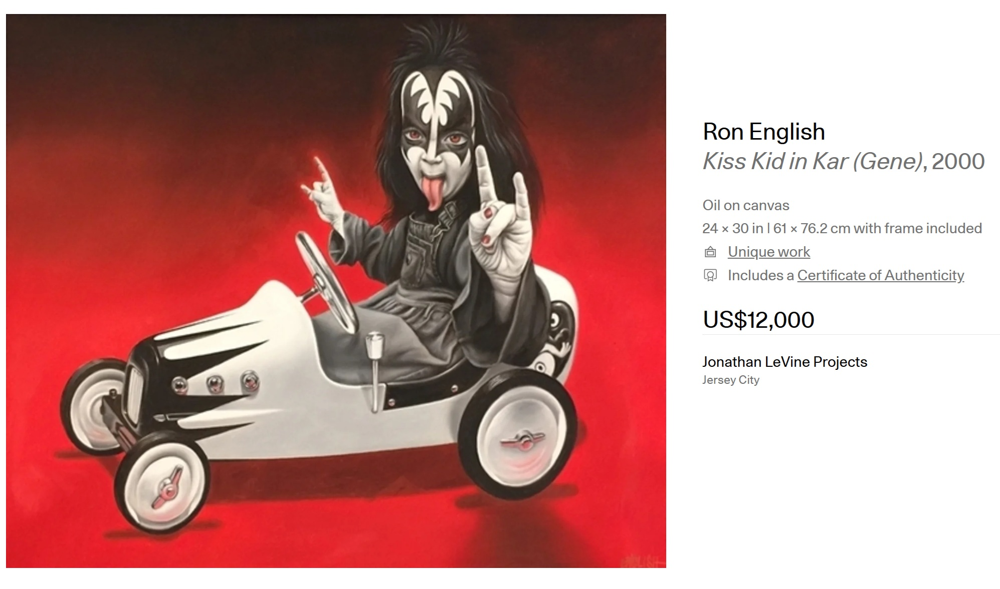

Provenance
Private collection.
Exhibitions
Pop Surrealist Classics from the Vault, Jonathan LeVine Projects, Jersey City, New Jersey, US, October 17–November 17, 2022.
Literature
Ron English, Popaganda: The Art & Subversion of Ron English (San Francisco: Last Gasp, 2001), p. 125. ISBN 1-887128-60-3.
Ron English, Son of Pop: Ron English Paints His Progeny (San Francisco, California: 9mm Books and The Shooting Gallery, 2007), p. 53. ISBN 978-0-9766325-1-1.
Ron English, Original Grin: The Art of Ron English (Paris: Cernunnos, 2019), p. 124. ISBN 978-2374950938.
Notes
In Popaganda, this work was erroneously titled Kiss Kidd in Kar.
In Popaganda and Son of Pop, this work’s dimensions are recorded inconsistently: Popaganda reports 24 × 136 inches, while Son of Pop reports 24 × 36 inches.
This work appears on Artsy’s artwork page under the title Kiss Kid in Kar (Gene), which is the title of a similar work.
Artsy reports the work as hand-signed by the artist; this differs from the current catalogue metadata above, where no signature or marks are observed.
This painting references Gene Simmons of the band KISS in his signature makeup.
Ancillary Documentation
The following materials document artwork-page, exhibition-page, and source-imagery references connected to the work.


